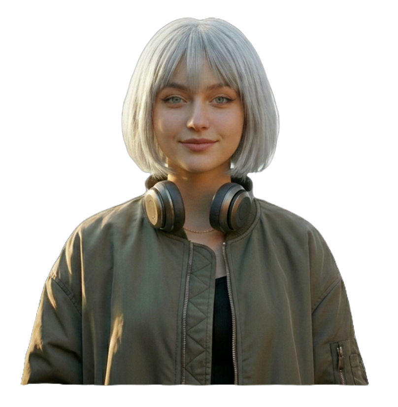
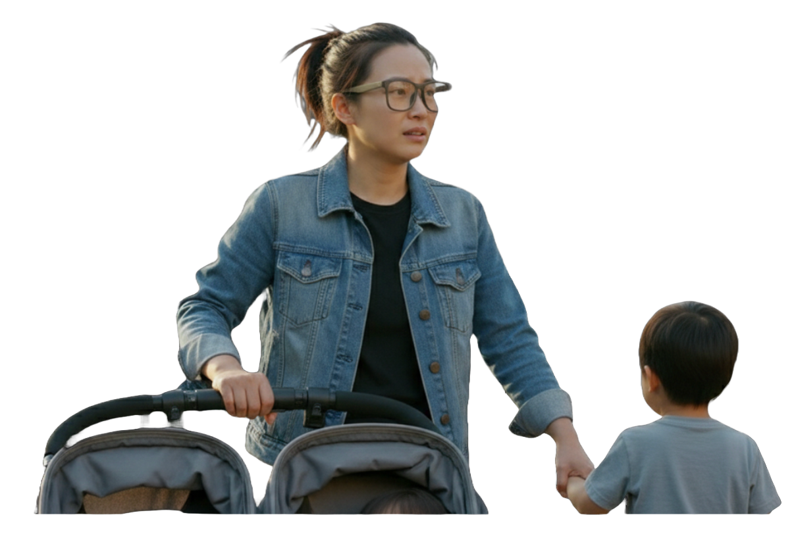

从碎片数据到典型画像
为了确保设计决策不偏离真实的人性需求，我并没有急于在实验室里构想“理想用户”，而是将田野调查中收集到的数十份访谈记录与观察笔记进行了亲和图（Affinity Diagram）梳理。透过那些看似杂乱的吐槽与抱怨，我发现不同背景的游客在行为模式与核心痛点上呈现出高度的聚类特征。基于此，我们将这些碎片化的需求聚合成了三个极具代表性的用户画像。他们代表的不是某个人，而是三类典型的心理模型与行为困境。

画像一：拒绝说教的“体验派” - 佐伊 (Zoe)
这一画像集合了我们在调研中遇到的“数字原住民”群体特征。作为社交媒体的重度用户，他们对博物馆官方那种“百科全书式”的解说持强烈的保留态度。在归纳他们的行为时，我发现了一个有趣的矛盾：他们讨厌被动地听课，却极度渴望发现。
痛点：去滤镜化的真实
对于佐伊这类用户而言，现有的导览器太严肃、太无趣。他们并不想知道这栋建筑建于哪一年，而是想知道这里发生过什么鲜为人知的轶事。他们需要的是“社交货币”，是那些能让他们在朋友圈显得独具慧眼的微小发现。因此，ECHOES
对他们来说，不能是一个古板的说教者，而必须是一个风趣博学的朋友，能在一瞥之间告诉他们：“嘿，你看那个窗框，其实设计师在那里藏了一个彩蛋。”

画像二：由于物理受限而焦虑的家长 - 莉莉 (Lily)
这一画像不仅代表了家长，更涵盖了所有在游览中双手被占用的群体。在观察数据中，我发现这类用户面临的挑战是极其具体的物理限制。她需要一手推着婴儿车，一手拉着大孩子，根本没有“第三只手”去操作手机。手机对她来说甚至是一个危险的干扰源——低头看屏幕的瞬间，可能就意味着孩子跑出了视线范围。
痛点：解放双手的安全感
她的核心诉求是物理层面的“减负”。她希望眼镜能成为她的育儿助手，引导孩子“去寻找藏在画里的那只小狗”，让孩子主动观察，而不是让她照着说明牌念书。对她来说，安全性至关重要，她需要开放式的音频体验，确保在听讲解的同时，也能时刻听到孩子的呼唤。
画像三：拒绝“降智”的硬核考据党 - 陈工 (Arthur)
这一画像代表了文化遗产旅游中最核心、却最常被科技产品忽视的“银发专家”群体。他们对历史建筑有着极高的专业要求，经常因为导览内容的浅显或错误而感到失望。我们在访谈中反复听到类似的抱怨：“这个解说太浅了，完全是在哄小孩。”或者“字太小了，为了看清楚我得把眼镜摘下来。”
痛点：生理与认知的双重门槛
他们的痛点在于生理机能退化与高认知需求之间的矛盾。在户外强光下，视力下降让他们难以看清手机屏幕；而作为专业人士，他们极其痛恨人工智能可能产生的“虚假信息”。对于陈工这类用户，ECHOES
必须解决两个问题：一是利用增强现实技术进行视觉辅助（如大字号、高对比度），二是确保内容的学术级准确性。他需要的不是故事，而是严谨的知识。
设计机会点收敛：
通过对这三类典型画像的解构，ECHOES
的设计挑战变得清晰可见：我们需要设计一套自适应系统，既能满足佐伊的探索欲，又能解决莉莉的物理束缚，同时还能补偿陈工的视觉机能。
 (1).avif)